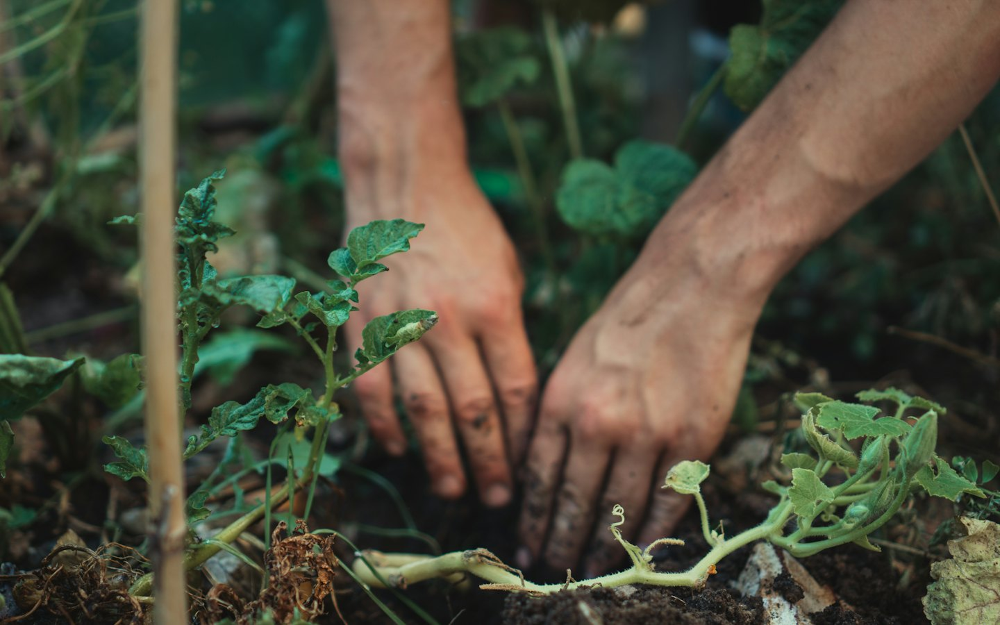

Apoie as campanhas
Contribuições ajudam a adquirir sementes, ferramentas e materiais para as ações coletivas. Cadastre seu interesse e combinamos os próximos passos diretamente.
Quero apoiarNOSSAS AÇÕES
Conheça as frentes que mantêm a Casa Semente em movimento e escolha como quer chegar junto.

ALIMENTO DE VERDADE, PERTO
Transformamos espaços subutilizados em lugares de cultivo, encontro e aprendizado. Os alimentos são cuidados em conjunto e compartilhados com a vizinhança.

MAIS VERDE, MAIS ENCONTRO
Organizamos dias coletivos para plantar, revitalizar espaços comuns e fazer as ideias da vizinhança saírem do papel. Cada pessoa contribui no seu ritmo.
SABER QUE CIRCULA
Rodas e oficinas aproximam pessoas que querem aprender sobre cultivo, compostagem e cuidado com o território. Conhecimento bom é conhecimento compartilhado.
Receber notícias dos encontrosDUAS FORMAS DE FAZER PARTE
Não processamos pagamentos por esta página. O cadastro registra apenas seu interesse; a equipe entrará em contato para orientar os próximos passos.
VAMOS CULTIVAR JUNTOS?